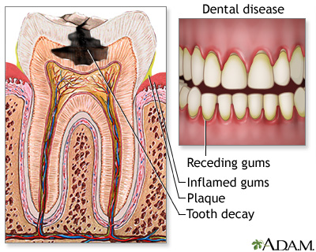

Introduction
Dental health is a cornerstone of overall well-being, yet many of us are familiar with the discomfort and inconvenience of tooth decay. One of the most common dental issues affecting people worldwide is dental cavities, or simply cavities. Let's delve deeper into what cavities are, how they develop, and how they can be prevented.
What is a Dental Cavity?
A dental cavity, also known as tooth decay or caries, is essentially a hole that forms in a tooth due to the erosion of its hard outer surface, called enamel. Teeth are covered with a protective layer of enamel, which is the hardest substance in the human body. However, when plaque—a sticky film of bacteria—builds up on teeth, the bacteria produce acids that can gradually dissolve enamel and create cavities.
How do Cavities Develop?
The process of cavity formation typically follows these steps:
- Plaque Formation: Plaque is constantly forming on your teeth, especially after consuming sugary or starchy foods. If not removed by brushing and flossing, plaque can harden into tartar (calculus), which is more difficult to remove and provides a surface for more plaque to adhere to.
- Acid Production: The bacteria in plaque feed on sugars from food and beverages, producing acids as a byproduct. These acids attack the enamel of the teeth, weakening it over time.
- Enamel Erosion: As the enamel breaks down, it eventually creates a cavity—a small hole or pit in the tooth. If left untreated, the decay can progress deeper into the tooth, reaching the softer dentin layer and potentially the pulp, which contains nerves and blood vessels.
- Symptoms: Initially, cavities may not cause any symptoms. However, as the decay progresses, you may experience tooth sensitivity to hot, cold, or sweet foods, toothache, visible pits or holes in your teeth, or stains on the surface of the tooth.
Prevention and Treatment
The good news is that cavities are largely preventable with good oral hygiene habits and regular dental check-ups. Here are some essential tips for preventing cavities:
- Brush Twice a Day: Brushing your teeth twice a day with fluoride toothpaste helps remove plaque and bacteria.
- Floss Daily: Flossing removes plaque and food particles from between the teeth and along the gumline, where your toothbrush can't reach
- Visit Your Dentist Regularly: Regular dental checkups and cleanings are essential for preventing gum disease and catching any issues early
- Eat a Healthy Diet: A balanced diet rich in fruits, vegetables, and lean proteins can help support gum health
If a cavity does develop, treatment options depend on the severity of the decay and may include:
- Fillings: For minor to moderate cavities, the decayed portion of the tooth is removed, and the hole is filled with a dental filling material, such as composite resin, amalgam, or gold.
- Crowns: If the decay is extensive and has weakened the tooth structure, a crown may be necessary to restore its shape and function.
- Root Canal Therapy: If the decay reaches the pulp of the tooth and causes infection or abscess, root canal treatment may be needed to remove the infected tissue and seal the tooth.


Conclusion
Understanding what dental cavities are and how they develop can empower you to take proactive steps in maintaining good oral health. By practicing effective oral hygiene, making smart dietary choices, and seeking regular dental care, you can significantly reduce your risk of developing cavities and preserve your smile for years to come. Remember, prevention is key when it comes to dental health—taking care of your teeth today can save you from potential discomfort and costly treatments tomorrow.